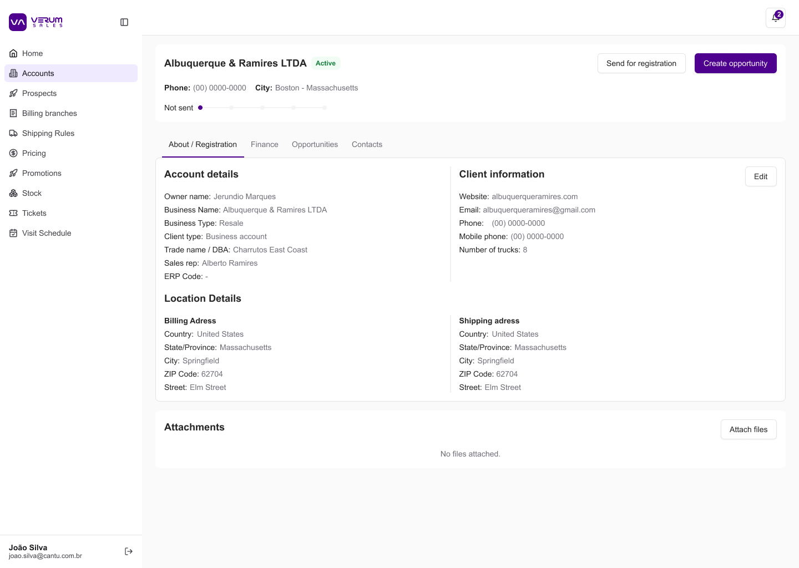
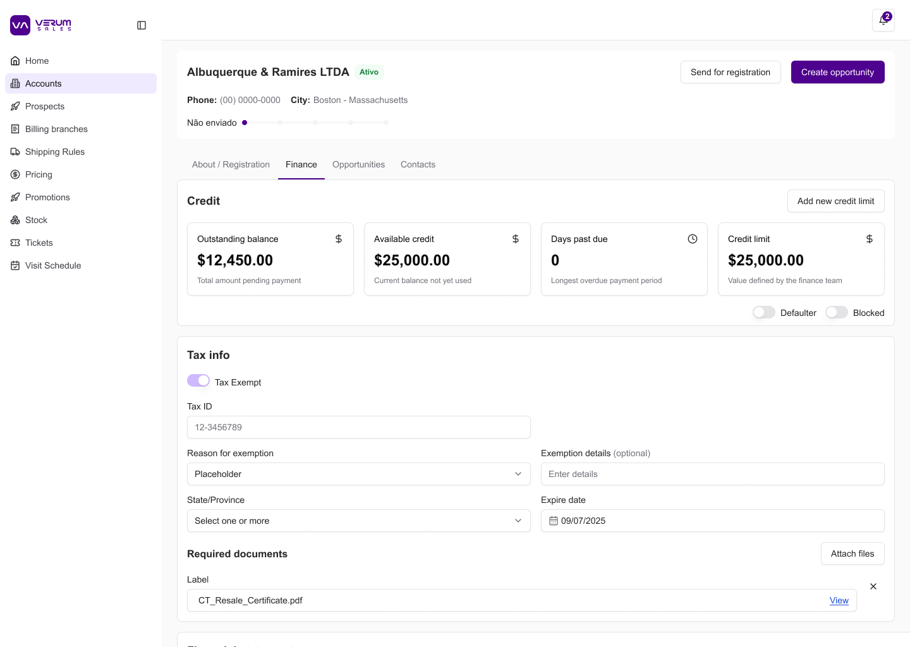
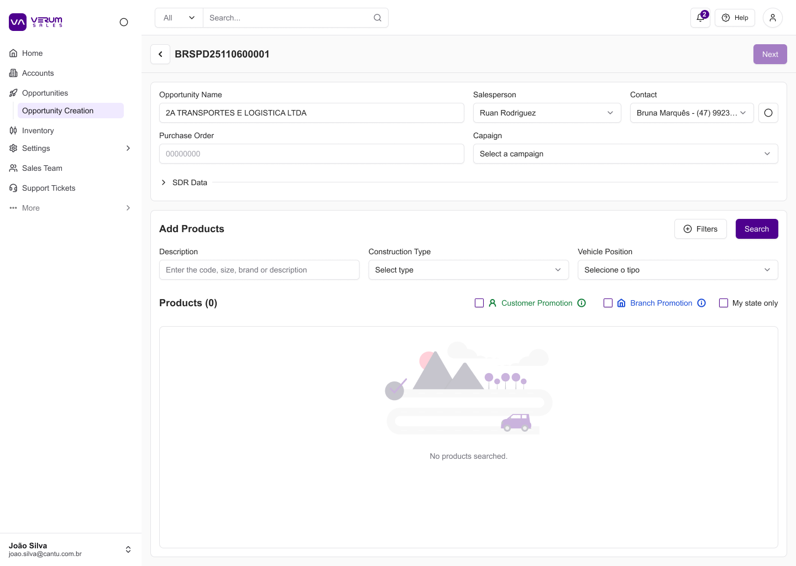
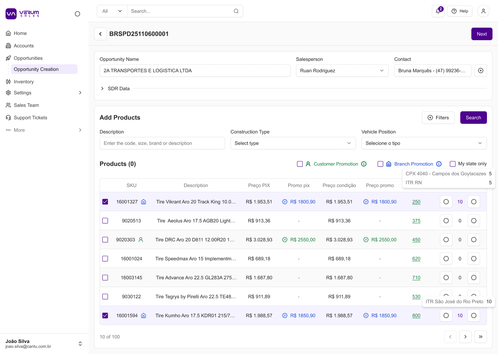
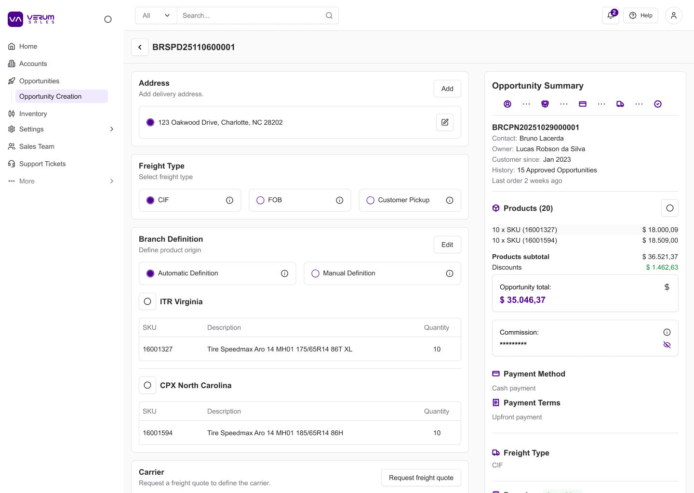
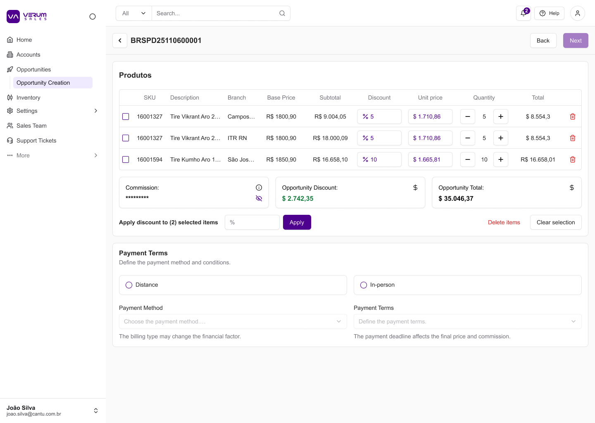

Product Design & Strategy · Cantu Inc.
VerumCenter didn't exist before this project. It emerged from the strategic consolidation of Conect — the retail operations platform — and Verum Sales Global — the wholesale platform — into a single product designed to serve Brazil, USA, and Mexico from day one.
Cantu Inc. operates across Brazil, the USA, and Mexico — one of the largest automotive parts distribution networks in Latin America, serving over 6,000 partner auto centers. The commercial operation was split along two distinct business models: Conect, the platform for retail operations (varejo), and Verum Sales Global (VSG), built for wholesale accounts (atacado).
Each platform had its own rules, channels, tax logic, and user workflows. Each country had further adaptations. As the company moved toward international expansion and operational unification, the fragmentation became unsustainable: support agents needed to switch tools to handle a single customer, business rules existed only as institutional memory, and there was no shared operational layer that could serve both business models simultaneously.
VerumCenter was the answer to that problem — and it had to be designed from scratch. There was no existing product to iterate on. The challenge was to define what a unified operational console should even be: which modules it needed, how retail and wholesale workflows could coexist in the same interface, and what a rule system that worked across three countries would look like.
I worked as a UX + Product Strategy lead across the full lifecycle of the product — from the first discovery session to engineering handoff. This wasn't a design-only engagement.
The core problem wasn't a broken interface — it was a missing product. Two business models, three countries, and five tools that didn't talk to each other.
Before
Two separate products (Conect + VSG), each built for one business model. Three countries with divergent rules. Supply-constrained orders taking 20–30 days. Fiscal decisions requiring specialist calls. No shared module, no shared language.
Direction
A single product with role-based access, shared modules, and an explicit rule layer — designed so that retail and wholesale workflows can coexist, and so that adding a new country means configuring the existing system, not building a new one.
Discovery ran in parallel with product architecture design — there was no phase boundary between understanding the problem and beginning to define the product. Key inputs:
VerumCenter was designed around four principles: single source of truth, role-appropriate access, rule transparency, and global-ready from day one. Before any screen was designed, the product's module structure was defined — what it contained, how retail and wholesale workflows mapped onto shared modules, and where country-specific logic would live within the same system.
VerumCenter is organized around two core objects: Accounts and Opportunities. Every workflow in the platform — from managing a customer's credit limit to closing a multi-branch sale — runs through these two modules. The same structure serves retail and wholesale accounts across all three markets.
Account pages consolidate all customer information into four tabs: About/Registration (entity data, contacts, addresses), Finance (credit limits, tax regime, required documents), Opportunities (full history), and Contacts.

Account — About / Registration: entity data, business type, sales rep, location, client information

Account — Finance: credit limit, outstanding balance, days past due, tax exemption, required documents
Opportunity Creation is a four-step flow designed to handle the full complexity of a B2B order — basic account info and product search, product selection with pricing tiers and branch stock, freight type and logistics configuration, and a final price editing step with per-item discount controls.

Step 1 — Header: opportunity name, salesperson, contact, purchase order, product search with filters

Step 2 — Add products: PIX price, promotional price, branch stock, quantity — with customer and branch promotion flags

Step 3 — Freight & logistics: CIF / FOB / Customer Pickup, branch origin (automatic or manual), live opportunity summary sidebar

Step 4 — Price editing: per-item discount, bulk discount apply across selected items, payment method and terms
One of the earliest product design decisions was establishing a shared UI language. VerumCenter needed to serve distinct user roles — support agents in Brazil, commercial directors in the USA, operations managers in Mexico — all within the same product. Without a consistent component system, each module would drift into its own visual dialect, making the product harder to learn and impossible to scale.
I defined the core component patterns — status indicators, data cards, filter structures, action flows — that would be reused across modules regardless of which business model or country was in context. This standardization wasn't aesthetic; it was structural: the same component rendering a "Closed/Won" status in a retail opportunity view had to work identically in a wholesale account detail.
Design Challenge 01
The most structurally complex problem: making a large, multi-dimensional ruleset legible to humans. Rules in VSG are layered — a customer's permissions depend on scope, channel, tax regime, and country simultaneously. Before VerumCenter, the only way to know which rules applied to a given customer was to ask a specialist.
I designed a filterable dashboard where any stakeholder can select Scope × Channel and immediately see which rules apply, with expandable cards showing rule rationale, dependencies, and known edge cases. It replaced phone calls with a self-serve interface usable by support agents and finance directors alike.
Design Challenge 02
Designing for three countries meant the rule system needed a country dimension — not a separate document per market, but a unified filter. Tax treatment, channel availability, and customer classification all differ across Brazil, USA, and Mexico. Business areas, legal teams, and country-specific commercial leads needed a precise view of what applied where without navigating separate tools or documentation systems.
I extended the filter architecture with a country axis. A legal analyst in Brazil can now filter by Brazil + Wholesale and see exactly which rules govern that intersection — the same tool, the same interface, a different configuration.
Design Challenge 03
An early version of the seller-facing interface used data tables — the default pattern for dense operational data. Field testing with sales reps revealed a fundamental mismatch: on mobile, horizontal scroll made the tables unusable. Reps reported skipping screens entirely because the effort of navigating the table outweighed the value.
The pivot: replaced tables with card-based layouts designed mobile-first. Each card surfaces critical data — Phase Status, Order Status, account name, value — in a glanceable format, with progressive disclosure for details. Status badges became first-class elements of the card, visible without a single scroll. The card pattern was then standardized across other modules as part of the shared component system.
Rather than relying on static Figma links for user feedback, I built functional prototypes using AI-assisted development and deployed them on Vercel for direct validation with real users. This approach eliminated the friction of scheduled design reviews and let field teams interact with a working interface on their own devices — the same environment where the usability problems were actually happening.
Handoff to engineering was organized through GitHub, with specs and context structured to support accurate implementation — a deliberate decision to close the gap between design intent and built product, not just deliver screens and step back.
Metrics are directional and NDA-compliant. Exact figures available in context.
Define the module boundary earlier. The initial product scope expanded organically as discovery surfaced new requirements — which was appropriate for a product that didn't exist yet. But a clearer module definition at the start (what's in scope for v1, what's deferred) would have prevented some scope creep that slowed component standardization in the middle of the project.
More seller testing on mobile earlier. The horizontal-scroll table problem was caught during field testing — but could have been caught sooner if mobile walkthroughs with sales reps had been prioritized in early research. The pivot was fast once we had the signal; getting the signal sooner would have prevented a design iteration cycle mid-sprint.
Separate the rule dashboard sooner. The Identity & Permissiveness Dashboard started as a feature inside VerumCenter. Business stakeholders — legal, finance, commercial leads — would have benefited from a standalone, embeddable version earlier. Keeping it integrated was right for support agents; the two use cases were different enough to warrant separate surfaces.